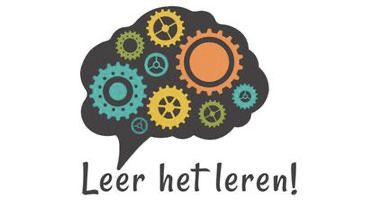
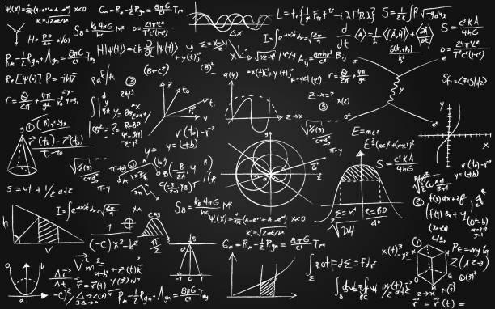

Dus wil je leren leren kijk dan zeker rond op deze website!

Economie
Stap 1: Maak een samenvatting met een goede begrippenlijst, door de samenvatting zelf te maken leer je al heel veel.
Stap 2: Leer de samenvatting, doe dit door de samenvatting een paar keer door te lezen hierdoor leer je het beste.
Stap 3: leer de formules die je moet leren doe dit door ze te stampen en vaak achter elkaar op te schrijven.
Stap 4: Maak oefenopgaven of een oefentoets, hierdoor oefen je de stof in de praktijk toe te passen. En weet je wat je nog lastig vindt en kan je dat nog opnieuw leren.
Maatschappijleer
Stap 1: Maak een samenvatting met een goede begrippenlijst, door de samenvatting zelf te maken leer je al heel veel.
Stap 2: Leer de samenvatting, doe dit door de samenvatting een paar keer door te lezen hierdoor leer je het beste.
Stap 3: Maak oefenopgaven of een oefentoets, hierdoor oefen je de stof in de praktijk toe te passen. En weet je wat je nog lastig vindt en kan je dat nog opnieuw leren.
Wiskunde
Stap 1: maak duidelijk welke stappen je moet nemen voor je soort sommen die je moet maken.
Stap 2: leer die stappen goed door ze te stampen.
Stap 3: Maak oefenopgaven of een oefentoets, hierdoor oefen je de stof in de praktijk toe te passen. En weet je wat je nog lastig vindt en kan je dat nog opnieuw leren.

Aardrijkskunde
Stap 1: Maak een samenvatting met een goede begrippenlijst, door de samenvatting zelf te maken leer je al heel veel.
Stap 2: Leer de samenvatting, doe dit door de samenvatting een paar keer door te lezen hierdoor leer je het beste.
Stap 3: Leer ook goed plaatjes en diagrammen te analyseren, dat heb je namelijk nodig op je AK toets.
Stap 4: Maak oefenopgaven of een oefentoets, hierdoor oefen je de stof in de praktijk toe te passen. En weet je wat je nog lastig vindt en kan je dat nog opnieuw leren.
Nederlands
Stap 1: maak een goede samenvatting van wat je moet leren, als je een leestoets hebt hoef je dit niet te doen.
Stap 2: leer de samenvatting door hem vaak door te lezen. Als je een leestoets hebt, oefen met een oefentoetsen. Als je geen oefentoets hebt kan je hier drukken.
Stap 3: Maak oefenopgaven of een oefentoets, hierdoor oefen je de stof in de praktijk toe te passen. En weet je wat je nog lastig vindt en kan je dat nog opnieuw leren.